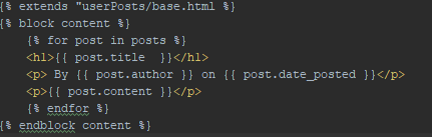

James Pitt
BSc. Hons. Programmer
Sol Tenebrae
Blueprint optimisation April 10, 2019
As I discovered when investigating the CPU performance of the Sol Tenebrae project, the blueprint layout was very messy and extremely hard to understand what was occuring. I have decided to fix this using re-route nodes and replacing whole sections which were redundant as will be explained.

^ For reference, this was the blueprint in question ^

First of all I tackled the left most part of the blueprint and organised the route nodes so that they all shared the same reroute node. Since the same variable was used for multiple nodes a reroute node is the best option. If the different nodes were using different variables, this would not be an applicable solution and you would need to import the different variable for each node.

When I was dragging and rearranging the nodes, these 2 (red and grey)lines appeared to be connected to another node very far away from the 'get' source. This is unnecessary and causes the blueprint to look more cluttered and thus harder to read.

I resolved this by removing the red line and replacing it with a get variable 'IsDead' imported directly into the node required. The grey line was not connected to any nodes seen in this image and so I moved the get node for the grey line to the destination it was headed (can be seen in next images).

This was very strange... This node was checking several different boolean results and if any of them were true then some other nodes got executed. This is strange because the intrinsic nature of a boolean is binary, the value is either 0 or 1. Therefore there's no need to have multiple different routes checking each of them. However if you attempt to put all boolean routes into one route, they will cancel each other out? This seems like a fault with Unreal itself rather than this blueprint, as a result I had to have them all reroute very messily into an OR node. Ideally, it would have been better and tidier to have them all share 1 route going towards a branch node.

Lastly I found this redundant sequence node, as well as many other tangled routes. I removed the sequence node and did some final touches to make the blueprint a bit more readable and the comprehensible. Hopefully this means that in the future when people will go to make extensions to these blueprints or to further enhance them they will have an easier time understanding what is happening.

Product owner
Portability April 03, 2019
Another requirement of the Product Owner system was that it was required to run on mobile devices. Therefore I will be documenting the transition that was required to port the application to being usable on a mobile phone with the potential for the development of a mobile phone app dedicated to the system
Product owner
Optimisation April 07, 2019
As another project which I chose to optimise was my second year game 'Sol Tenebrae'. Sol Tenebrae is a top dungeon crawler game with an emphasis on solving puzzles with some small combat as a side addition. This project has an interesting and unique optimisation problem. Not only is the game very poorly optimised and bottle necked by the game thread but the optimisation worsens as the game time increases. (These stats can be seen by typing stat unit into the console of the Unreal Engine editor)
This is obviously not ideal. The tool I used for looking specifically at game thread performance was acquiring a profile on the game thread performance by entering 'stat startfile' into the command console. Then opening the profile in the session frontend tab and routing around looking for the culprit I discovered this 'majestic' tree...

So upon investigating the spider controller blueprint I found something that God must have turned his back on. The actual content of the blueprints and what they say is irrelevant, the important thing to take away from this is that it is ALL run on a tick event. I confirmed that this was the perpretrator because when I disabled this tick event, the game thread time did not steadily increase forever. Event Tick is great for small projects and small algorithms as it's a quick and easy logic unit for maintaining a cycle, but in bigger games like this one it can grind the frame rate to an effective halt. I tried a few solutions to this.
Straight off the bat I got rid of the event tick and replaced it with the node 'Onperception' so I essentially made the spider controller blueprint only update if the they could see the player. So far so good, the frames were still high and the game threading processing time was still low. But now if the spiders stop seeing the player, they freeze, which isn't ideal. So I tried creating a timer with the event tick still in by adding a node which times how long it has been since the player was last seen and setting it to 5 seconds before de-activating. This caused the spiders to always try to ascend into the heavens, literally. Mhm. Lastly, and most simply, I added a delay to the event tick. Normally this is a very bad idea as if the delay is too big it can cause the game to stutter and/or exacerbate the game threading problem. In this case, by adding a delay of 100ms between event ticks it essentially allows itself a break. If this were a bigger project where a simple delay after the event tick didn't solve the issue then I would perhaps incorporate the delta ticks into an equation which forces the event tick to fire every set interval from the last delta tick.

Before

After
To explain: A tick is essentially a frame. If you have 60fps you are updating 60 times a second, but someone with 30fps is only updating 30 times a second. If you make the distinction to update only after a certain amount of delta seconds, the duration remains the same even if your FPS changes. A classic example of where this is a bad idea is in Skyrim when you sometimes walk into a building and the objects inside the building fly everywhere. This is due to Bethesda tying the physics to the framerate. TL;DR Tick = Frame, Delta seconds = Time since last Tick (Frame). This was the end result after adding the delay after the tick:
Product owner
Optimisation March 28, 2019
By using an ORM (Object relational mappers) I was able to type in the values for a virtual database I wanted to create in the models.py section of my Django directory. I entered the desired values and the requirements for each command that needed to be executed along with them to the URLS.py file of the program.

Opening a command line and executing the command 'python manage.py sqlitemigrate userPosts 0001' it converted all the values I had put into the python file into an SQL framework. This not only means by using this I did not need to have extensive knowledge on SQL but it has saved me a lot of time in production.

By then following this up with the command: 'python manage.py migrate' this updates the information in the newly created Database. This is useful because this is a quick and simple way of interacting and making changes to the SQL database without actually having to use any SQL yourself. You simply put the data in and the migrations handle the conversions into an SQL database.

This created a file called '0001_initial.py' under the djangoPO/userPosts/migrations directory which populated it with the following code:

The database has now been created with the columns: Title, Content, Date, Author. Each their own appropriate restrictions (i.e title cannot be longer than 100 chars). The database is also now easily accessible using a Python django shell command which one can enter using the python manage.py shell command. Once in this shell you can query the database to recover any information that has been entered. Here's an early example of querying the current user list of the database. The result is 2 users which were created as test users 'Admin' and 'User'.

Product owner
Optimisation March 20, 2019
Straight from the get-go I noticed I was using a lot of repeated code for displaying the HTML pages in Django. To fix this I used something called template inheritance. I realised that, as with all programming, repeating code is a big mistake regardless of the project you are working on. Even though this was done at the start of the project development, I still feel it was an important move to make, optimisation wise, as it will save a lot of headaches further down the line. Anyway:
This was identical to the about page at the time of writing this, with the word about replaced with home in appropriate areas. I created another template to be inhereted by these two templates, and every other template in the future, with this code:
Which resulted in the other 2 pages being reduced to a meagre amount of code:  This also allows me to edit all pages in the future by simply editing 1 parent page, this speeds up the addition of future additions to the website as well as ensuring it remains tidy.Product owner
Optimisation March 13, 2019
I tested developing the new Product Owner system in an environment like NodeJS initially and found it appropriate given the time scope and the complexity of the site to be made. After receiving a tip off about the potential for using another environment, Django, I began testing to see if it would be more efficient to develop the Product Owner system in a Python environment. I finally decided on creating the system using Django as this enabled me to bypass much of the hassle associated with web development and focus on designing and creating the actual content of the website.
Product owner
Optimisation March 5, 2019
The assignment given to me inherently requires that I optimise the website sufficiently and I will be documenting the processes that were involved with this. The tools which have been used and/or will be used are programs such as Atom - the interpreter to write the code for the new system. NodeJS - the JavaScript variant that execute and display the website without the need of hosting it on a server among other supportive values that accompanies Node. PhpMyAdmin - this is the website which currently hosts the database and is accessed to view and manipulate database data so that it can be used for the new system. Currently I am still in the planning phase of the development and transition for the website.
Product owner
Peer review system March 2nd, 2019
This is the very first thing I worked on when creating the new PO system, I figured I would work on the login page and build a site around that. This is due to the fact that the fundamental feature of a Product Owner system is that someone can log-in and perform actions as the individual. This code originally involved a for loop which went through each account and checked the username against each password, this meant in the current state of the log-in system it would iterate through 9 different checks. This was unnecessary and an initial oversight. The new code only checks the username against the password relative to the username number in the array. In future, this may become obsolete when incorporating Databases. For now, this is a more optimal way to test the log in system and manage larger numbers of test accounts.
The Product Owner system
Introduction February 20th, 2019
I have been tasked with revamping the current Product Owner system, this was a task delegated to me as part of the Agency team. The current peer review system is written in PHP and hosted in such a way that makes it very difficult for modular additions to be added. Therefore my task is to translate the code to a more modern platform (NodeJs was chosen for this) and allow for future additions to be made to the system easily by structuring the system in a modular fashion.
An Autism Simulation
Bit of optimisation February 11th, 2018
The project I am optimising is the prototype I am developing for my dissertation- an autism simulation through a text adventure. This involves defining a number of emotion states which are required to be randomised everytime the player makes a decision. However I realised that I didn’t need to run through the cycle to set moods each time and could instead run the mood function when the program opens and assign values to all future decisions. The premise of the game is that the player is having a conversation with an AI who has volatile emotions and can react strangely to prompts which might not logically seem as though they should elicit such a reaction. This was done by selecting a dialogue option and then having the AI change their behaviour to a random emotion. However, sometimes the AI would trip up on itself and go into an infinite loop of changing emotions, similar to when Jim Carey first don the mask in ‘The Mask’. This code is responsible for selecting the emotion.

This was the code which fired everytime a button was pressed, this was cumbersome as the program was required to generate a random number everytime a button was pressed.
With this new function in the starter phase of the code “changeEmotionAll”, this runs through the code and assigns an emotion to every decision taken by the player. This cuts down the possible number of emotions from infinite to 28.

This is a relatively simple matter of optimisation, but still one I put my project through. The result was that there was no longer any stuttering between loading the different images and the process flowed smoothly.
Optimisation
Overview February 1st, 2018
For Optimisation I have decided to do three things over the course of the next term.
Firstly, I will optimise part of my dissertation project. This is due to the fact that it can sometimes pause between updating images and I think this process could be sped up.
Secondly, I will detail the process with which I will be creating a Product Owner system in Django. I will specifically be explaining how django will help speed up the process of creating a webserver and creating an SQL database with ORMs.
Lastly, I will refactor my second year project's blueprints so that I can resolve the stutter that appears in the game after a prolonged session playing the game. I will detail the precise timings in ms that have been saved and how I have managed to achieve this process. I will then also refactor the layout of the nodes in the blueprints so that they are more comprehensible.
An Autism simulation
Change of plan February 2nd, 2019
I have decided to change the language with which I am developing this project with from Ren'Py to Visual Basic, this is due to having more knowledge in Visual Basic and the belief that Visual Basic is fit for purpose for the type of prototype I am constructing.
An Autism Simulation
Project: Autimulation October 2nd, 2018
I have started development for a game which I am truly passionate about. The game involves attempting to replicate the experience of autism through virtual gaming environments. This is part of my dissertation where I will use the game to collect data to see if it is possible to replicate such an experience. The deadline I've set for myself to have this project achieved by is the end of March 2019.